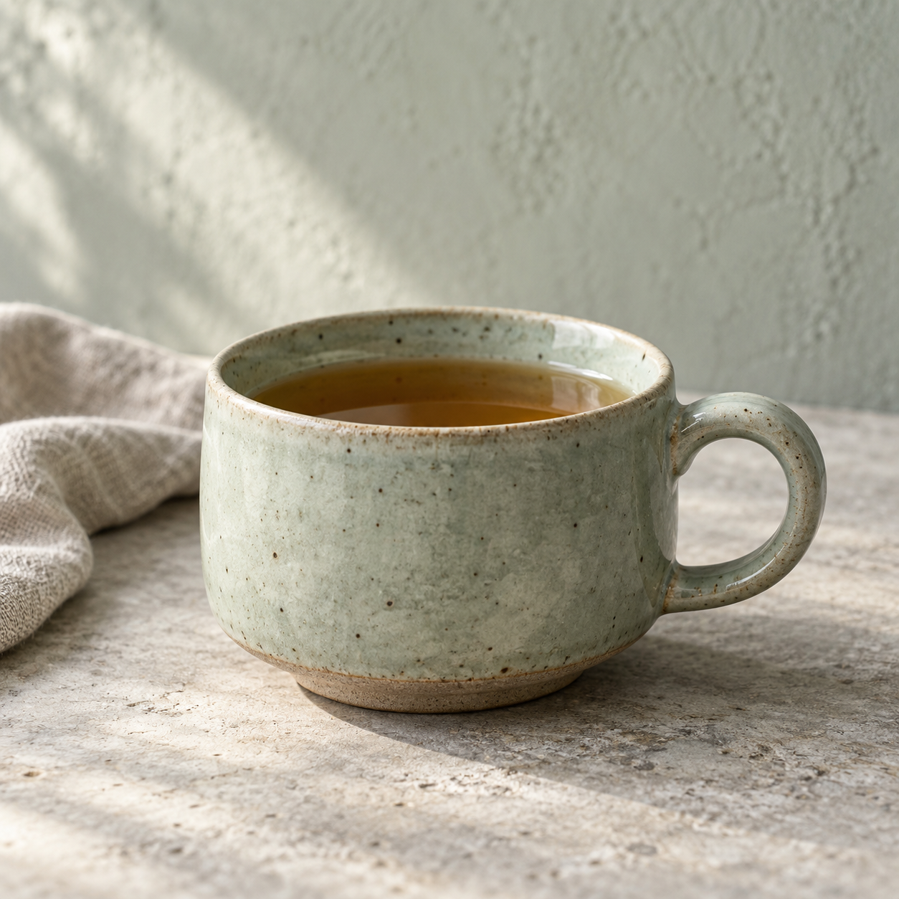

青釉日常杯 演示容量 260 ml
从一件日常器物开始。
先看用途，再了解每件的设计与规格。
概念展示，暂不销售。以下规格与价格均为演示值；实际材质和安全适用性尚未核实。
品牌理念
不必隆重，
也值得认真。
青屿把“日常使用”作为设计起点：从饮茶、用餐和摆花的动作出发，关注器物的轮廓、釉色视觉与摆放比例。这里呈现的是设计意图，实际工艺与使用性能仍需资料支持。
了解三项设计原则 →使用之前
先了解，再使用。
清洁建议、手作概念中的差异，以及加热和食品接触的资料边界，都在使用指南中说明。